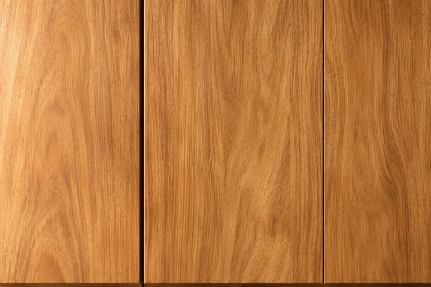

Veja na luz do ambiente
Observe de manhã e sob a luz artificial que você costuma usar à noite.
Compare a fibra, o contraste e a superfície antes de escolher um acabamento para o seu móvel.

De tom quente e veios visíveis, combina com tecidos e pedras claras. A variação natural do desenho faz parte da superfície.
Observe de manhã e sob a luz artificial que você costuma usar à noite.
Aproxime a amostra do piso, da pedra e das peças que você pretende manter.
Converse sobre frequência de limpeza, contato com água e áreas muito manuseadas.
A escolha entra no briefing. A confirmação do acabamento é feita depois, com amostra física.
Em um atendimento real, a marcenaria conferiria as medidas no imóvel antes de definir a fabricação.